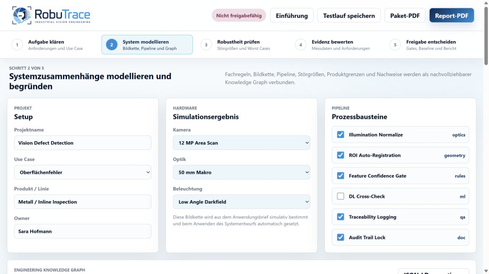

Warum gute Laborergebnisse noch keine Produktionsreife beweisen
Fünf typische Lücken zwischen Demo, Pilotanlage und belastbarer Serienfreigabe.
Robustheitsanalyse für Bildverarbeitung
RobuTrace prüft bestehende Bildverarbeitung systematisch gegen reale Störgrößen, macht Sensitivitäten sichtbar und übersetzt Ergebnisse in nachvollziehbare KPI- und Abnahmeberichte.

Das Problem
Hohe Testgenauigkeit allein beweist noch keine Produktionsreife. Beleuchtung, Produktvarianz, Rüstwechsel und neue Linien verändern die Bedingungen. Ohne strukturierten Validierungsprozess bleiben Risiken lange unsichtbar.
Empfindlichkeiten gegenüber Licht, Unschärfe, Rotation oder Verdeckung zeigen sich häufig erst im laufenden Betrieb.
Ergebnisse verteilen sich auf Skripte, Tabellen und Einzelwissen. Vergleiche sind aufwendig und schwer reproduzierbar.
False Accept, False Reject und Yield werden nicht durchgängig mit Testfällen, Versionen und Maßnahmen verknüpft.
Der RobuTrace Ansatz
RobuTrace ergänzt bestehende HALCON-, OpenCV- und industrielle Vision-Workflows, statt sie zu ersetzen.
Bilddaten, Predictions und Ziel-KPIs importieren. Relevante Störgrößen und Szenarien reproduzierbar durchspielen.
Kritische Parameter, Schwellenwerte und Worst Cases erkennen. Risiken nach technischer und wirtschaftlicher Relevanz priorisieren.
KPI-Ergebnisse, Testabdeckung und Maßnahmen in einem versionierten Abnahmebericht zusammenführen.
Vom Messpunkt zur Entscheidung
Aktuell als klickbarer MVP für Pilotgespräche und Anforderungsvalidierung.
Der Nutzen
Nicht mehr Accuracy um ihrer selbst willen, sondern ein klarer Weg von der Vision-Idee zur reproduzierbaren Produktionsfreigabe.
Für wen RobuTrace entsteht
Vision-Systeme für Kunden schneller absichern und Abnahmekriterien bereits in der Entwicklungsphase transparent machen.
Wiederkehrende Validierungsmuster standardisieren und Engineering-Wissen projektübergreifend nutzbar machen.
Risiken bei Linienanlauf, Produktwechsel und Re-Validierung anhand klarer Kennzahlen bewerten.
Über RobuTrace
RobuTrace wird von Sara Hofmann entwickelt. Der Ausgangspunkt: industrielle Bildverarbeitung soll nicht nur unter Idealbedingungen funktionieren, sondern unter realen Produktionsbedingungen messbar robust sein.
Erfahrungen in Softwareentwicklung, optischer Systemauslegung und Systems Engineering fließen in ein Werkzeug ein, das technische Tiefe mit einem klaren Validierungsprozess verbindet.
Mehr über Sara HofmannRobuTrace Insights
Fünf typische Lücken zwischen Demo, Pilotanlage und belastbarer Serienfreigabe.
Weshalb ein einzelner Accuracy-Wert für industrielle Entscheidungen nicht genügt.
Ein pragmatischer Einstieg in Perturbation, Sensitivität und Worst-Case- Analyse.
Pilotphase
Gesucht werden Maschinenbauer, Integratoren und Produktionsteams, die ihre aktuellen Validierungsabläufe teilen oder einen Pilot-Use-Case prüfen möchten.